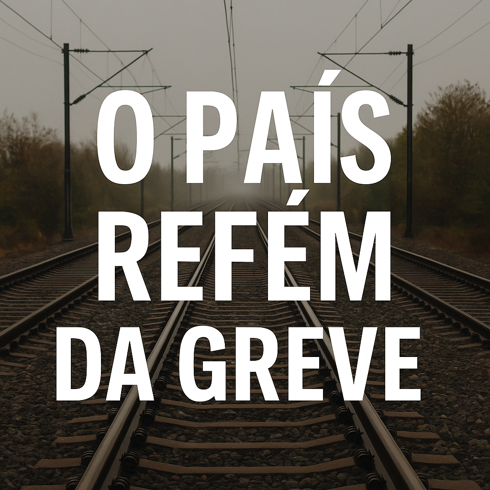

Publicado em 2025-05-07 09:06:20
Por Francisco | Publicado a 07 de May de 2025 | Categoria: Sociedade / Política / Mobilidade
"Quando o direito à greve se exerce sem limites, o país inteiro torna-se refém de interesses particulares."
Portugal é hoje palco de um fenómeno estranho: um país democrático, mas ciclicamente paralisado por greves nos transportes — sobretudo na CP. Não são raras nem episódicas: são dezenas todos os anos. Só em 2024, contaram-se mais de 40 greves em diferentes formatos — pontuais, parciais, estratégicas — todas com impacto direto nas vidas dos cidadãos e na economia.
O problema não é o direito à greve, consagrado na Constituição. O problema é a ausência de limites práticos, de bom senso institucional e de equilíbrio entre direitos e deveres. O que devia ser exceção tornou-se rotina. E o povo, apanhado entre sindicatos combativos e governos apáticos, paga a fatura com o seu tempo, rendimento e dignidade.
A legislação portuguesa é omissa quanto ao número máximo de greves por setor. Não há mecanismos eficazes de mediação obrigatória. E os serviços mínimos, quando decretados, são frequentemente ineficazes ou ignorados. Isto transforma a greve num instrumento de chantagem social e política — sobretudo quando usada por quem presta serviços essenciais.
O medo de represálias eleitorais e a cultura de cedência contínua tornam os governos reféns dos sindicatos dos transportes. Não se trata aqui de proteger trabalhadores explorados — trata-se muitas vezes de disputas salariais ou de cláusulas secundárias. E o interesse público? Esse fica sempre para segundo plano.
Em países como Alemanha, França ou Reino Unido, greves em serviços essenciais estão sujeitas a regras apertadas: prazos mínimos de aviso, arbitragem prévia obrigatória, limites temporais e penalizações por abusos. Em Portugal, reina o vazio regulatório — e no vazio, instala-se o abuso.
O país não pode continuar a ser refém de uma minoria organizada que paralisa uma maioria silenciosa. O direito à greve deve manter-se — mas com limites. Exige-se uma reforma legislativa que traga proporcionalidade, obrigatoriedade de negociação séria e garantias mínimas de funcionamento social.
Porque democracia não é só o direito de parar. É também o dever de servir. E nenhum país pode prosperar onde a exceção virou hábito e o interesse geral se curva aos caprichos de quem aprendeu a usar o caos como ferramenta de pressão.
Francisco Gonçalves
in Fragmentos do Caos